4to Grado · Bloque 2 · Período 1 · Profe: Ana María Herrera Romero
🌋
Procesos que modifican el relieve
Indicador 1 · Pág. 56
📖 EstudiaLee y repasa el contenido
💧 Erosión
Desgaste de la superficie terrestre por acción del agua o el viento. El agua arrastra tierra y piedras → sedimentos que forman llanuras en las partes bajas.
🌋 Acción de los volcanes
Los volcanes expulsan humo, ceniza y lava. Las erupciones desprenden secciones del volcán, cambiando su apariencia. Ej: Turrialba (2014), Poás (2017).
⚡ Placas tectónicas
CR se ubica sobre las placas Cocos y Caribe. La placa Cocos se introduce bajo la Caribe: subducción. Genera temblores y volcanes.
Subducción = una placa bajo la otra
🗺️ Bloque de Panamá
CR también se ubica sobre el Bloque de Panamá (fragmento de la placa Caribe). La placa Cocos se desliza debajo → temblores en el Pacífico central.
📷 Páginas del libro — Pág. 56-57
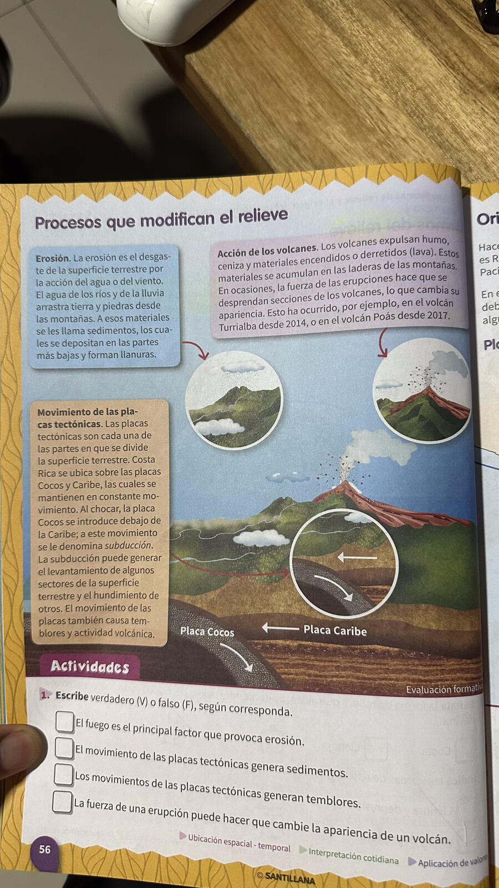
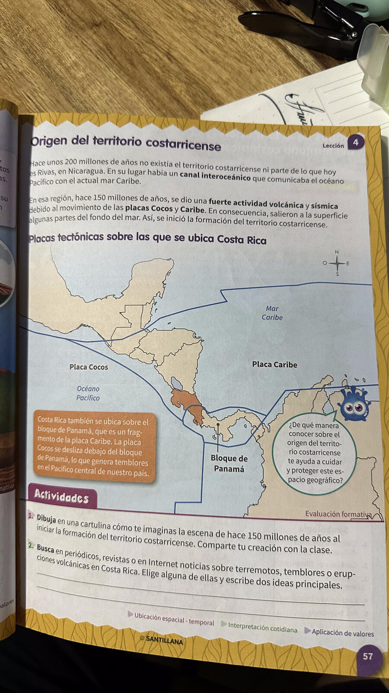
✏️ PracticaCompleta los ejercicios
📖 Del libro (pág. 56) — Verdadero o Falso
El fuego es el principal factor que provoca erosión.
El movimiento de las placas tectónicas genera sedimentos.
Los movimientos de las placas tectónicas generan temblores.
La fuerza de una erupción puede cambiar la apariencia de un volcán.
✏️ Selecciona la respuesta correcta
🔗 Une con el número correcto
Erosión
Subducción
Sedimentos
Volcán
1. Expulsa lava, ceniza y humo
2. Materiales depositados en partes bajas
3. Una placa se introduce bajo la otra
4. Desgaste por agua o viento
🏔️
Origen y etapas del territorio costarricense
Indicador 2 · Pág. 57-59
📖 EstudiaLee y repasa el contenido
⏰ Hace 200 millones de años…
No existía Costa Rica. Había un canal interoceánico. Hace 150 millones de años el choque de las placas Cocos y Caribe generó actividad volcánica → salió el fondo del mar → inicio del territorio.
🟡 Primera Etapa
Choque de placas → arco insular externo (grupo de islas)
Se formaron las penínsulas de Santa Elena, Nicoya y Osa
Se formaron los cerros más antiguos del país y los cerros de Herradura
🟢 Segunda Etapa
Choque de placas → orogénesis → cordillera de Talamanca
Movimientos → Cord. Volcánica Central, Guanacaste y Tilarán → arco insular interno
Se eliminó el canal interoceánico
Surgieron el Valle Central y el Valle de El General-Coto Brus
Se formaron la fila Brunqueña y la península de Burica
🔵 Tercera Etapa
Intensa actividad volcánica y erosiva
Viento y agua arrastraron materiales → rellenaron espacios
Se formaron las llanuras y costas de Costa Rica
Las llanuras se ubican en el norte, el Pacífico y el Caribe
📷 Páginas del libro — Pág. 58-59
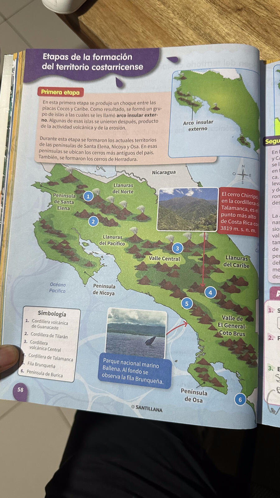
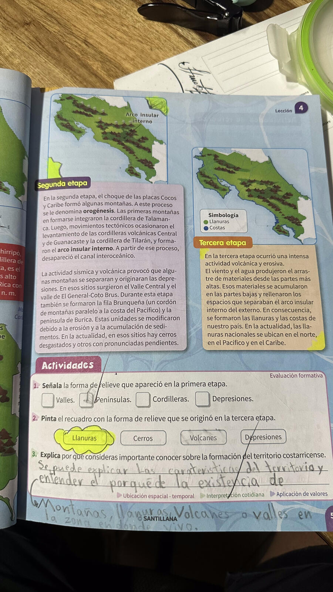
✏️ PracticaCompleta los ejercicios
📖 Del libro (pág. 59) — Selección múltiple
✏️ Selecciona la respuesta correcta
🔗 Une cada elemento con su etapa
Arco insular externo
Valle Central
Llanuras nacionales
Cord. de Talamanca
1. Primera etapa
2. Segunda etapa
3. Tercera etapa
⛰️
Eje montañoso central y Cordilleras
Indicadores 3.1, 3.2, 3.3 · Pág. 66-67
📖 EstudiaLee y repasa el contenido
🧭 Eje montañoso central
✦ Atraviesa CR de noroeste a sureste ✦ Montañas altas con pendientes ✦ 4 cordilleras
Cordillera
Ubicación / Volcanes
Actividades
🔴 Volcánica de Guanacaste
Volcán Orosí → Arenal. Volcanes: Rincón de la Vieja, Miravalles, Iles, Tenorio. Detiene vientos del Caribe → sequía en Guanacaste
Depresión de Tapezco → volcán Turrialba. Volcanes: Poás, Barva, Irazú
Ganadería, agricultura, turismo
🟤 Talamanca
Cerros La Carpintera → cerro Pando (Panamá). Sin volcanes. Cerro Chirripó: 3819 m (punto más alto de CR)
Madera, agricultura, turismo (Chirripó, La Amistad)
🌳 Importancia de los parques nacionales en las cordilleras
Protegen la biodiversidad, conservan recursos naturales, regulan el clima, preservan fuentes de agua y permiten el turismo ecológico.
📷 Páginas del libro — Pág. 66-67
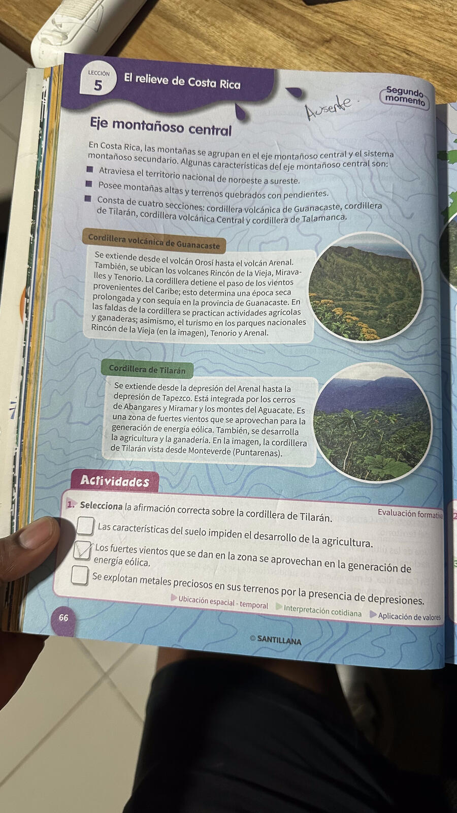
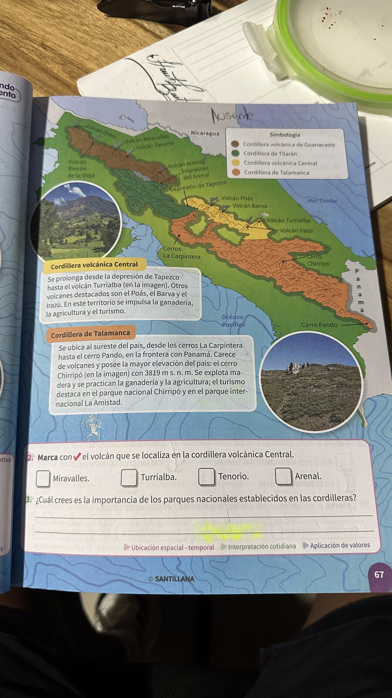
✏️ PracticaCompleta los ejercicios
📖 Del libro (pág. 66-67) — Selección múltiple
🔗 Une cada cordillera con su característica
Guanacaste
Tilarán
Volcánica Central
Talamanca
1. Cerro Chirripó (3819 m). Sin volcanes
2. Poás, Barva, Irazú, Turrialba
3. Energía eólica. Vista desde Monteverde
4. Rincón de la Vieja, Miravalles, Tenorio, Arenal
✏️ Selecciona la respuesta correcta
🗻
Sistema montañoso secundario
Indicadores 4.1, 4.2 · Pág. 68-69
📖 EstudiaLee y repasa el contenido
📋 Características generales
✦ Elevaciones más antiguas del país ✦ A lo largo de la costa pacífica ✦ Cerros de poca altura ✦ Reducen la intensidad del viento del Pacífico
🏔️ Santa Elena
Península de Santa Elena. Yacimientos de mármol → construcción y obras artísticas.
🏔️ Nicoya
Península de Nicoya. Depósitos de rocas calizas → fabricación de cemento.
🏔️ Herradura
Costa del Pacífico. Playas Jacó, Herradura y Manuel Antonio. Comercio y turismo.
🏔️ Fila Brunqueña
Entre Valle El General-Coto Brus y costa Pacífica. Caliza, cobre y bauxita. Arroz, frijol, café y banano.
🏔️ Salsipuedes
Península de Osa. Banano y palma africana.
🏔️ Cerros de Burica
Sureste del país. Banano, arroz y palma aceitera.
📷 Páginas del libro — Pág. 68-69
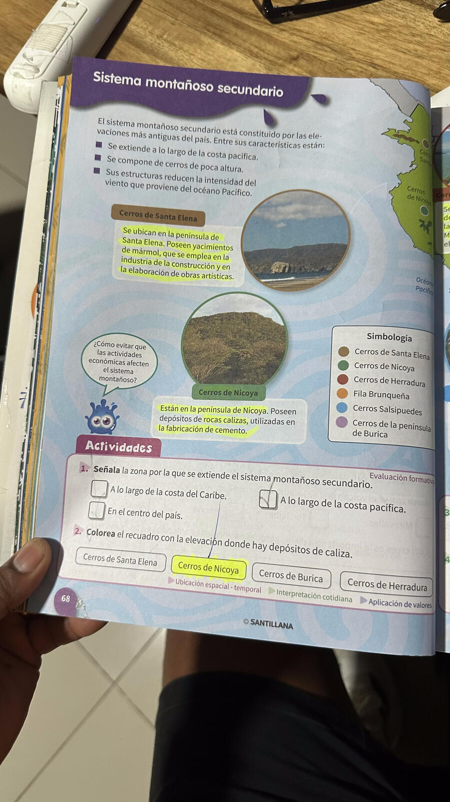
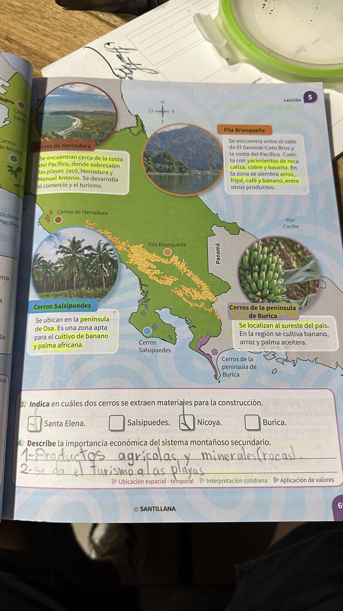
✏️ PracticaCompleta los ejercicios
📖 Del libro (pág. 68) — Selección múltiple
✏️ Selecciona el cerro o fila correcto
📖 Del libro (pág. 69) — Cerros con materiales de construcción
🌄
Valles de Costa Rica
Indicador 5 · Pág. 70-71
📖 EstudiaLee y repasa el contenido
📋 Características generales
✦ Centro del territorio y cercanías del Pacífico y Caribe ✦ Suelos fértiles ✦ Origen volcánico o sedimentario
🏙️ Valle Central
Entre Cord. Volcánica Central, Talamanca y montes del Aguacate
Ríos Virilla + Grande de San Ramón → Grande de Tárcoles
Café, caña de azúcar, papas, plantas ornamentales
Dividido por cerros Ochomogo/La Carpintera: occidental (Alajuela, Heredia, SJ) y oriental (Cartago)
🌾 Valle del Tempisque
Provincia de Guanacaste
Ríos Tempisque, Cañas y Bebedero
Ganadería de engorde, arroz y caña de azúcar
Parques: Palo Verde y Barra Honda
🌿 Valle de Talamanca
Sureste. Estribaciones Cord. de Talamanca
Ríos Telire, Coen, Lari y Urén
Banano, cacao, maíz y plátano
☕ Valle El General-Coto Brus
Sureste. Entre Cord. Talamanca y Fila Brunqueña
Ríos General + Coto Brus → Grande de Térraba
Café, plátano, piña, palma aceitera; ganadería; comercio con Panamá
📷 Páginas del libro — Pág. 70-71
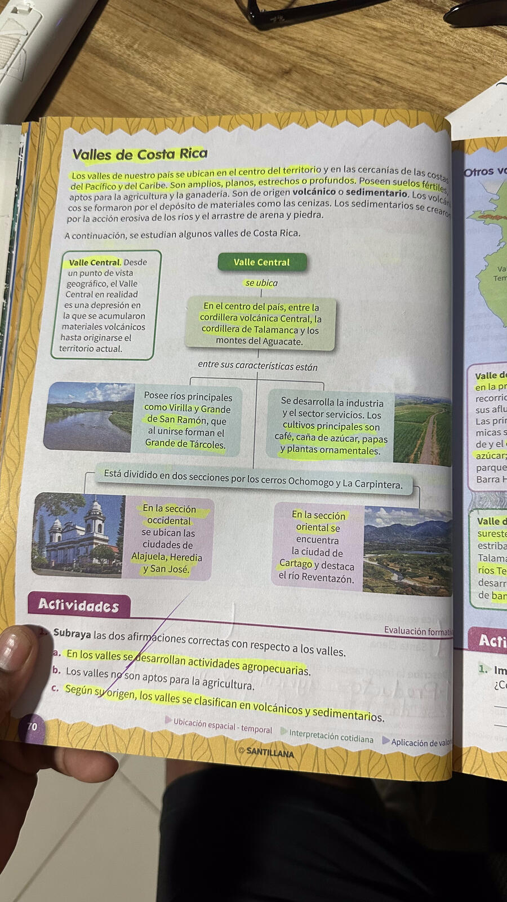
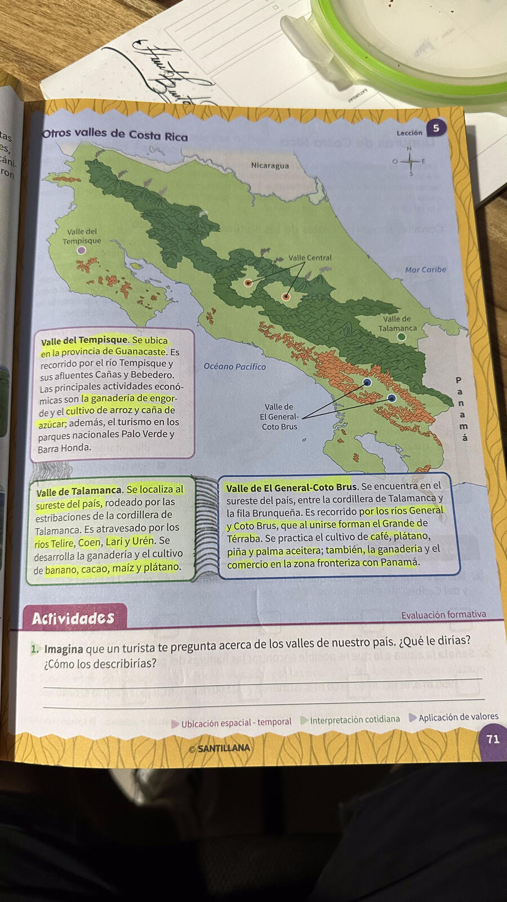
✏️ PracticaCompleta los ejercicios
📖 Del libro (pág. 70) — Verdadero o Falso
En los valles se desarrollan actividades agropecuarias.
Los valles no son aptos para la agricultura.
Según su origen, los valles se clasifican en volcánicos y sedimentarios.
🔗 Une cada valle con su río o característica
Valle Central
Valle del Tempisque
Valle de Talamanca
Valle El General-Coto Brus
1. Ríos General y Coto Brus → Grande de Térraba. Café y piña
2. Ríos Telire, Coen, Lari y Urén. Banano y cacao
3. Ríos Virilla y Grande de San Ramón → Grande de Tárcoles. Café
4. En Guanacaste. Ríos Tempisque, Cañas y Bebedero
✏️ Selecciona la respuesta correcta
🌿
Llanuras de Costa Rica
Indicadores 6.1, 6.2, 6.3 · Pág. 72-73
📖 EstudiaLee y repasa el contenido
📋 Características generales
✦ Tierras más bajas del territorio (0 a 500 m s.n.m.) ✦ Entre el eje montañoso y las costas ✦ Terrenos llanos → agricultura y ganadería ✦ Tierras fértiles por materiales volcánicos y marinos
🌍 Llanuras del Norte
Al norte. Ríos: Frío, Sarapiquí, San Juan. Actividades: Piña, yuca, tubérculos, ganadería.
Más cortas. Ríos: Tárcoles, Tempisque, Térraba. Actividades: Ganadería, arroz, caña de azúcar.
💼 Actividades económicas en las llanuras
Cultivos: piña, banano, cacao, arroz, caña de azúcar | Ganadería | Explotación de madera | Industria de fertilizantes
📷 Páginas del libro — Pág. 72
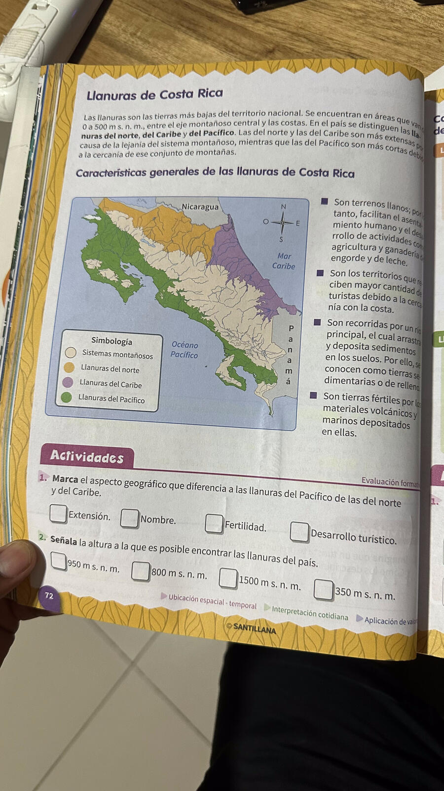
✏️ PracticaCompleta los ejercicios
📖 Del libro (pág. 72) — Selección múltiple
✏️ Selecciona la respuesta correcta
🔗 Une cada llanura con su río
Llanuras del Norte
Llanuras del Caribe
Llanuras del Pacífico
1. Ríos Tárcoles, Tempisque, Térraba
2. Ríos Reventazón, Pacuare, Matina
3. Ríos Frío, Sarapiquí, San Juan
🌊
Costas de Costa Rica
Indicadores 7.1, 7.2, 7.3 · Pág. 74-75
📖 EstudiaLee y repasa el contenido
💼 Actividades económicas en las costas
✦ Pesca: ríos, manglares y mar ✦ Comercio (cabotaje): navegación en pequeñas lanchas entre puntos de la costa ✦ Turismo: playas y parques nacionales costeros
🌅 Costa del Pacífico
Irregularidades: Muy irregular. Puntas, cabos, golfos y penínsulas (Bahía Salinas, G. Papagayo, G. Nicoya, P. de Osa, Golfo Dulce…)
Extensión: ~1254 km (bahía Salinas → punta Burica)
Paisaje: Terrenos rocosos y playas pequeñas (Tamarindo, Sámara, Conchal, Herradura)
Puertos: Puntarenas, Caldera, Quepos, Golfito
🌊 Costa del Caribe
Irregularidades: Casi lineal. Bahías, islas, puntas (Punta Castilla, Isla Calero, Bahía de Moín, Punta Cahuita…)
Extensión: ~212 km (Punta Castilla → río Sixaola)
Paisaje: Playas arenosas. Formaciones coralinas en Cahuita y Punta Mona
Puertos: Moín y Limón
🛡️ Acciones para proteger las costas
✦ No tirar basura al mar ✦ Proteger la biodiversidad ✦ Respetar vedas de pesca ✦ No dañar los arrecifes de coral
📷 Páginas del libro — Pág. 74-75
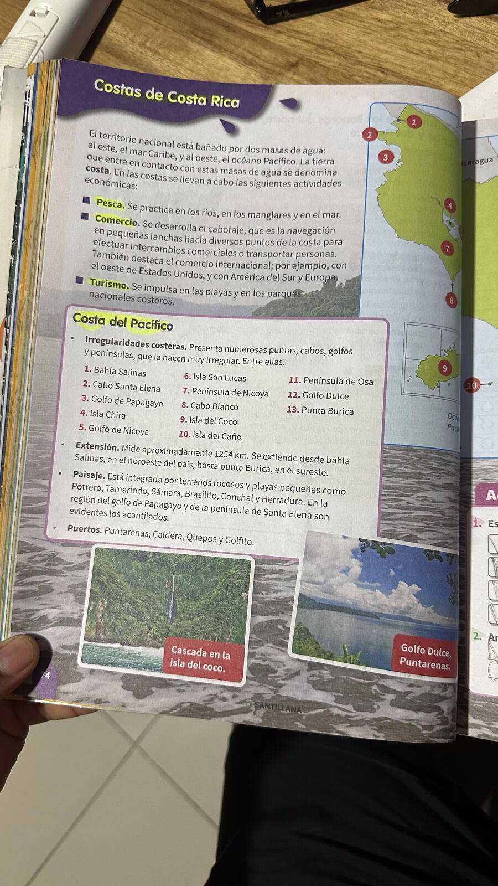
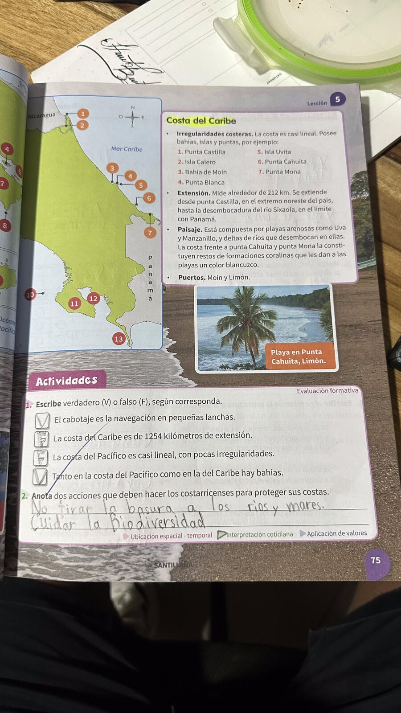
✏️ PracticaCompleta los ejercicios
📖 Del libro (pág. 75) — Verdadero o Falso
El cabotaje es la navegación en pequeñas lanchas.
La costa del Caribe es de 1254 kilómetros de extensión.
La costa del Pacífico es casi lineal, con pocas irregularidades.
Tanto en el Pacífico como en el Caribe hay bahías.